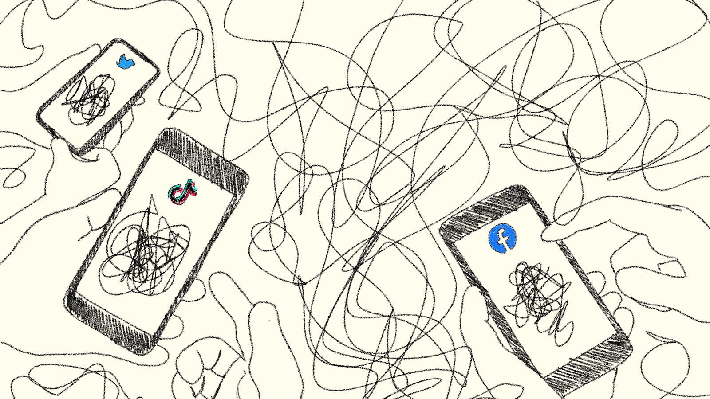

Now, more than ever misinformation is easily spread through various forms of digital media. In this website, you can learn all about the problems of misinformation through the centuries, it's impact and how you prevent yourself from falling into its trap.
Definition
Misinformation
/ˌmɪs.ɪn.fɚˈmeɪ.ʃən/
false or inaccurate information,especially that which is deliberately intended to deceive
Types of Misinformation
Misinformation comes in a variety of forms, and with the rise of the digital era it has become more widespread. Let's look at some types.
Satire
Satirical articles use humour and fictional stories to discuss social and political concepts. However, to sell the joke, many satirical websites like The Onion and The Babylon Bee are presented like a real news website, which can often lead to confusion among readers.
 Image of an example article from The Onion
Image of an example article from The Onion
Clickbait and Tabloids
In order to increase interest in their articles, some websites and tabloids use clickbait. Clickbait is sensationalized media (titles, images) which aims to encourage visitors to "click" on that article. They can incite the emotions of the reader and cause them to spread the content around, which can be extremely damaging when they contain fake news.
 Image of a list of clickbait articles from various websites
Image of a list of clickbait articles from various websites
Propaganda
Propaganda is used to distort facts or contain lies with the goal of instilling a certain emotion, often belief towards a goal. It was often used during the World Wars to encourage a sense of patriotism among citizens.
 Image of a Canadian government advertisement during WWI
Image of a Canadian government advertisement during WWI
Deepfakes
With the rise of artificial intelligence, deepfakes are the newest and likely most dangerous form of misinformation. New technology can allow people to generate images of fake events, or even of videos of people saying things they never did! This can make it incredibly difficult to visually distinguished between them.
 Examples of deepfake images of Barack Obama
Examples of deepfake images of Barack Obama
Conclusion
Now that you've learned about the history of misinformation, check out the details on this problem and its impact of this in our modern day and how you can avoid falling into its trap. Test your knowledge when you are done!